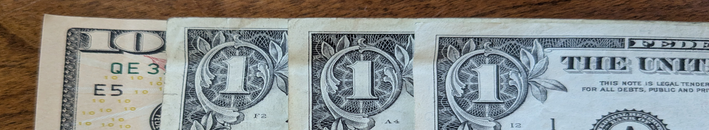
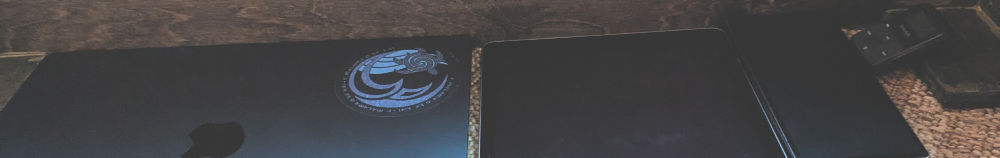
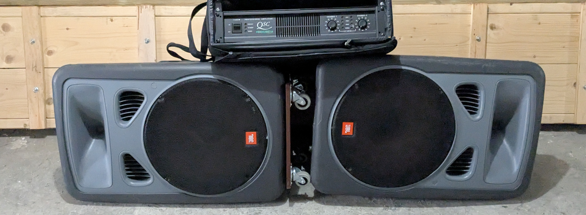

Why is clear. How is fraught with FUD. Here's what I did in case that's useful.

With streaming you pay for access before you listen. With marketplaces you buy music after you listen. I planned to spend approximately the same amount per month, so I started with the $12 I would have spent on the streaming service. Then I spent my first two weeks checking out new music and bookmarking anything I thought was worth considering. My next two weeks after that, I continued to check out new music while doing a second pass through my previously bookmarked albums to check they were indeed good enough to hear again. By the time I was going through my twice listened albums a third time to start acquiring, I had $24 available and another $12 coming in two weeks.
Digital album prices vary a lot. Some are free, some are expensive, some are a bargain, some have limited time discounts or promotional codes, sometimes you pay whatever you want. It's an open market. On several occasions I have paid over asking price because I thought it was excellent, and sometimes I've decided to postpone otherwise good music because it seemed too expensive. Art is not a uniform commodity.
For my first round, I bought 5 albums and copied them to my phone for anytime listening. The next month I went over budget to bump my phone collection up to a dozen albums. The month after that I bought one album, then eventually developed a balance between listening to my my own music, checking out new music, and evaluating bookmarked music to buy. Now I typically buy an album about every 2-3 weeks. Sometimes longer.
I stopped tracking the budget numbers after I found my pace. My best guess is that marketplace listening is costing me about the same or less than a streaming subscription. Not having to pay rent to listen to my music means I pay what I want when I want.
Not having a streaming subscription means putting up with ads every time I want to hear something I don't own. For quick general reference, or checking out a social recommendation, that's mildly annoying but ok. For anything I want to hear on a regular basis, having ads injected into the audio stream is not tolerable. So I took all the songs in my streaming "collection" and added them to my considering bookmarks. When next considering, I either:
There are more big artists and archival music available in the marketplaces now than when I started. Buying artist direct also seems to be getting more common.

Getting music means getting music files. I unzip my downloaded music into the "Music" folder on my computer, then copy whatever I want to carry with me to my droid phone, my iPad, or my mp3 player. I download in mp3 format because it works everywhere. If I want to do a full audio deep dive, I'll download files in an uncompressed or lossless format and listen on my computer using studio recording software.
My mp3 player is easy, I just plug it into the computer and copy music files onto it. My droid phone should be similar, but I have a Mac, so copying requires adapter software. With the Android File Transfer app no longer supported, I'm currently using OpenMTP. There are other apps. To get music onto my iPad, I have to first import my music files into Apple Music, then I can sync whatever artists I want to the iPad using the Finder. Copying files over the first time was annoying, but it doesn't get in the way after that.
My computer has all my music on it, and it's backed up from there. Most of my music is also copied onto my phone so I always have something with me for anytime listening. The default music player that comes with each device is completely fine for playing any selected album, but there are also free independent player apps offering additional features and functionality. I use both. My preferred player is digger (I wrote it).

At this point I'm pretty sure I never want to pay a monthly streaming service ever again. I might consider a service where I pay for what I use, just because I could skip ads when I wanted to reference something, but that's pretty minor. If it became possible to purchase any streamable recording at a some kind of affordable price, I would probably do that, but generally I'm all set. Music marketplaces are my best music life so far.
Life improvements:You always have to go through a lot of less-good music to find the music that's for you. Marketplaces have not created the spam-immune many-to-many trusted listener match network for music guidance, but perhaps they will be part of that. Plenty future service opportunities.
Marketplaces are addressing some limits through curated genre release feeds and search. Bandcamp also has playable editorial articles with introductions to niche genres, past music background surveys, global scene tips, and other overviews that have broadened my knowledge and introduced me to new music, some of which I now own.
So far I've been exploring on bandcamp.com, mirlo.space and subvert.fm. There are more. Mirlo keeps a list of projects they are aware of. If I'm looking for something in particular, I always search for it first using a non-tracking search engine. That usually finds me the artist's direct site if there is one, and other possible options.
My music stays with me, whether I'm connected to the internet or not. I don't need to pay rent to listen to it. Discovery and exploration is the best I've found so far. Worth considering if you are into music. HTH.